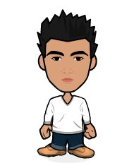

Personal information
Profile: I am a graphic designer and web UI developer specialized in art direction applied to digital,
interactive and printed media. I have a special interest and extensive knowledge in the area of front-end development,
but enjoy as well working on design, UX, branding, advertising and social media projects.Languages: Ingles,Español